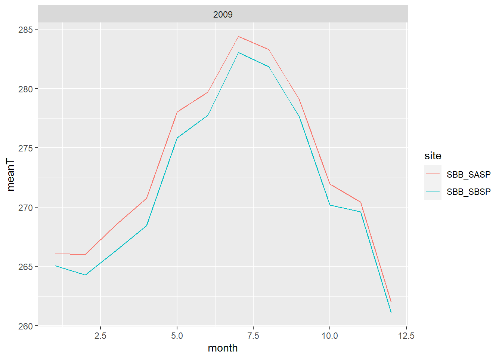
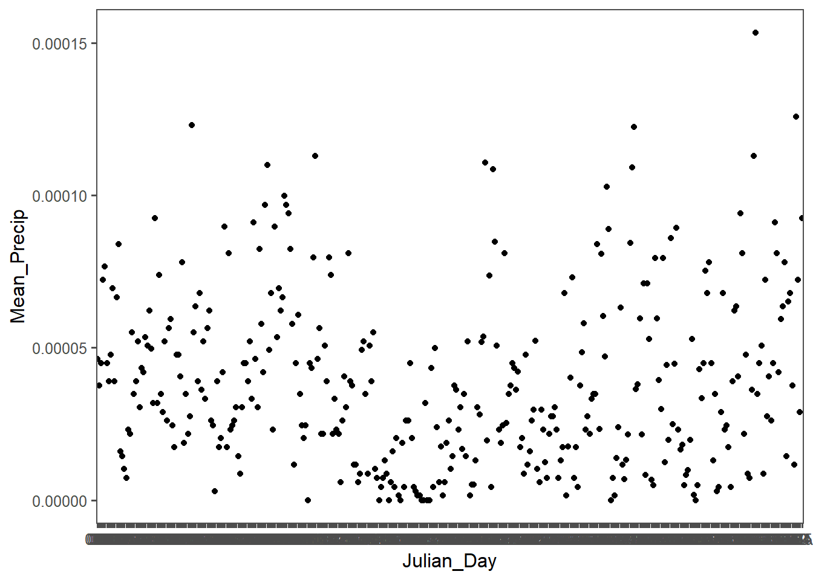
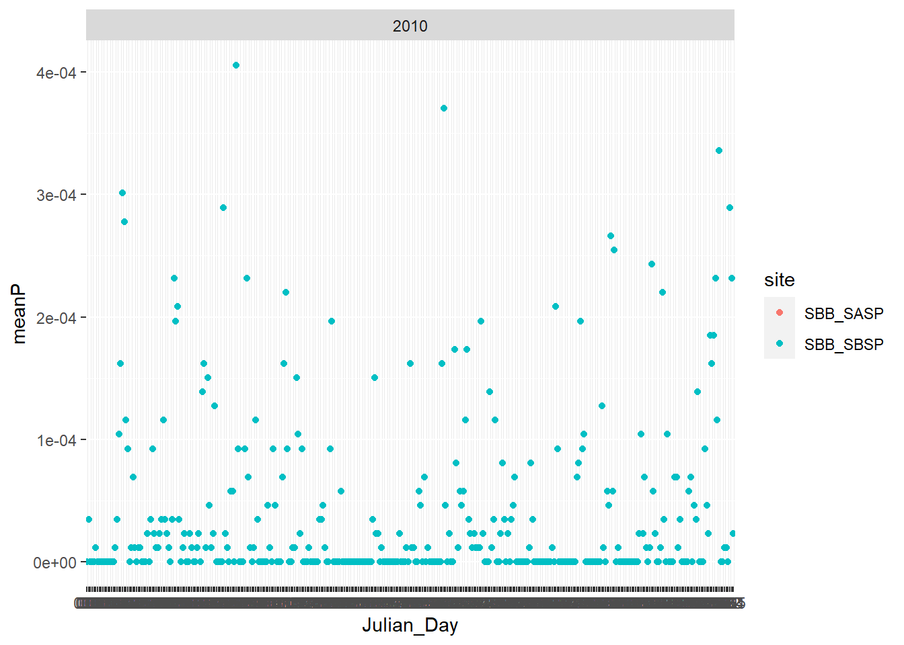
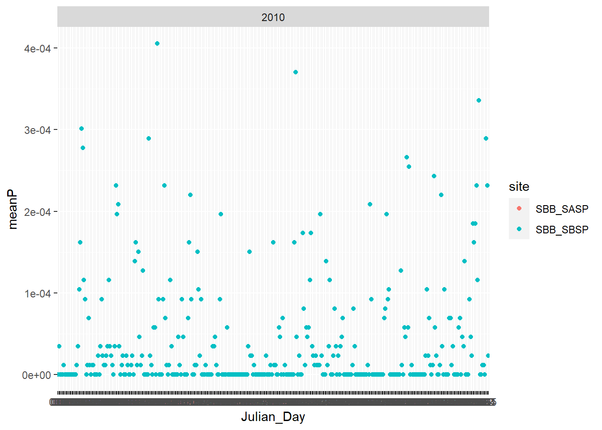

Chapter 3 Functions and Iterations
Learning to quickly go through and pull data out of a dataset using functions and iterations to avoid repeatitive code.
library(rvest)
site_url <- 'https://snowstudies.org/archived-data/'
#Read the web url
webpage <- read_html(site_url)
#Extract only weblinks and then the URLs!
links <- webpage %>%
html_nodes('a') %>%
.[grepl('forcing',.)] %>%
html_attr('href')
message(links)## https://snowstudies.org/wp-content/uploads/2022/02/SBB_SASP_Forcing_Data.txthttps://snowstudies.org/wp-content/uploads/2022/02/SBB_SBSP_Forcing_Data.txt##2.
Download the meteorological data. Use the download_file and str_split_fixed commands to download the data and save it in your data folder. You can use a for loop or a map function.
splits <- str_split_fixed(links,'/',8)
#Keep only the 8th column
dataset <- splits[,8]
#generate a file list for where the data goes
file_names <- paste0('data/',dataset)
for(i in 1:2){
download.file(links[i],destfile=file_names[i])
}
downloaded <- file.exists(file_names)
list.dirs(path='3_snow_functions_iteration/data')## character(0)##3. Write a custom function to read in the data and append a site column to the data.
## Using poppler version 22.02.0headers <- pdf_text('https://snowstudies.org/wp-content/uploads/2022/02/Serially-Complete-Metadata-text08.pdf') %>%
readr::read_lines(.) %>%
trimws(.) %>%
str_split_fixed(.,'\\.',2) %>%
.[,2] %>%
.[1:26] %>%
str_trim(side = "left")
headers## [1] "year"
## [2] "month"
## [3] "day"
## [4] "hour"
## [5] "minute"
## [6] "second"
## [7] "precip [kg m-2 s-1]"
## [8] "sw down [W m-2]"
## [9] "lw down [W m-2]"
## [10] "air temp [K]"
## [11] "windspeed [m s-1]"
## [12] "relative humidity [%]"
## [13] "pressure [Pa]"
## [14] "specific humidity [g g-1]"
## [15] "calculated dewpoint temperature [K]"
## [16] "precip, WMO-corrected [kg m-2 s-1]"
## [17] "air temp, corrected with Kent et al. (1993) [K]"
## [18] "air temp, corrected with Anderson and Baumgartner (1998)[K]"
## [19] "air temp, corrected with Nakamura and Mahrt (2005) [K]"
## [20] "air temp, corrected with Huwald et al. (2009) [K]"
## [21] "qc code precip"
## [22] "qc code sw down"
## [23] "qc code lw down"
## [24] "qc code air temp"
## [25] "qc code wind speed"
## [26] "qc code relhum"#function to read in 1 data file
#
#file=file_names[1]
reader<- function(file){
name = str_split_fixed(file,'/',2)[,2]%>%
gsub('_Forcing_Data.txt','',.)
df<-read_fwf(file)%>%
select(c(1:11))
names(df)<-headers[1:11]
df<-df%>%
mutate(site=name)
}
view(reader(file_names[1]))## Rows: 69168 Columns: 19## -- Column specification --------------------------------------------------------
##
## chr (2): X12, X14
## dbl (17): X1, X2, X3, X4, X5, X6, X7, X8, X9, X10, X11, X13, X15, X16, X17, ...
##
## i Use `spec()` to retrieve the full column specification for this data.
## i Specify the column types or set `show_col_types = FALSE` to quiet this message.##4.
Use the map function to read in both meteorological files. Display a summary of your tibble.
## Rows: 69168 Columns: 19
## -- Column specification --------------------------------------------------------
##
## chr (2): X12, X14
## dbl (17): X1, X2, X3, X4, X5, X6, X7, X8, X9, X10, X11, X13, X15, X16, X17, ...
##
## i Use `spec()` to retrieve the full column specification for this data.
## i Specify the column types or set `show_col_types = FALSE` to quiet this message.
## Rows: 69168 Columns: 19
## -- Column specification --------------------------------------------------------
##
## chr (2): X12, X14
## dbl (17): X1, X2, X3, X4, X5, X6, X7, X8, X9, X10, X11, X13, X15, X16, X17, ...
##
## i Use `spec()` to retrieve the full column specification for this data.
## i Specify the column types or set `show_col_types = FALSE` to quiet this message.## year month day hour minute
## Min. :2003 Min. : 1.000 Min. : 1.00 Min. : 0.00 Min. :0
## 1st Qu.:2005 1st Qu.: 3.000 1st Qu.: 8.00 1st Qu.: 5.75 1st Qu.:0
## Median :2007 Median : 6.000 Median :16.00 Median :11.50 Median :0
## Mean :2007 Mean : 6.472 Mean :15.76 Mean :11.50 Mean :0
## 3rd Qu.:2009 3rd Qu.: 9.000 3rd Qu.:23.00 3rd Qu.:17.25 3rd Qu.:0
## Max. :2011 Max. :12.000 Max. :31.00 Max. :23.00 Max. :0
## second precip [kg m-2 s-1] sw down [W m-2] lw down [W m-2]
## Min. :0 Min. :0.000e+00 Min. :-9999.000 Min. :-9999.0
## 1st Qu.:0 1st Qu.:0.000e+00 1st Qu.: -3.510 1st Qu.: 173.4
## Median :0 Median :0.000e+00 Median : -0.344 Median : 231.4
## Mean :0 Mean :3.838e-05 Mean :-1351.008 Mean :-1325.7
## 3rd Qu.:0 3rd Qu.:0.000e+00 3rd Qu.: 294.900 3rd Qu.: 272.2
## Max. :0 Max. :6.111e-03 Max. : 1341.000 Max. : 365.8
## air temp [K] windspeed [m s-1] site
## Min. :242.1 Min. :-9999.000 Length:138336
## 1st Qu.:265.8 1st Qu.: 0.852 Class :character
## Median :272.6 Median : 1.548 Mode :character
## Mean :272.6 Mean : -790.054
## 3rd Qu.:279.7 3rd Qu.: 3.087
## Max. :295.8 Max. : 317.300##5.
Make a line plot of mean temp by year by site (using the air temp [K] variable). Is there anything suspicious in the plot? Adjust your filtering if needed.
## `summarise()` has grouped output by 'year'. You can override using the
## `.groups` argument.
message("Site SBB_SASP has a higher yearly mean temperature than site SBB_SBSP for all years in the dataset. There is a big jump in temperature from the first year to the following years. Further inspection (in Q6) is needed to determine the suspicious jump in data.")## Site SBB_SASP has a higher yearly mean temperature than site SBB_SBSP for all years in the dataset. There is a big jump in temperature from the first year to the following years. Further inspection (in Q6) is needed to determine the suspicious jump in data.##6. Write a function that makes line plots of monthly average temperature at each site for a given year. Use a for loop to make these plots for 2005 to 2010. Are monthly average temperatures at the Senator Beck Study Plot ever warmer than the Snow Angel Study Plot? Hint: https://ggplot2.tidyverse.org/reference/print.ggplot.html
loopy<-function(data, xyear){
#y<-as.vector(unique(data[c("year")]))
met<-data%>%group_by(year, month , site)%>%
summarize(meanT=mean(`air temp [K]`))%>%
dplyr::filter(year==xyear)
print(ggplot(met,aes(x=month, y=meanT, color=site))+
geom_line()+ facet_wrap(xyear))}
for (i in 2005:2010){
loopy(met_files, i)
}## `summarise()` has grouped output by 'year', 'month'. You can override using the
## `.groups` argument.
## `summarise()` has grouped output by 'year', 'month'. You can override using the
## `.groups` argument.
## `summarise()` has grouped output by 'year', 'month'. You can override using the
## `.groups` argument.
## `summarise()` has grouped output by 'year', 'month'. You can override using the
## `.groups` argument.
## `summarise()` has grouped output by 'year', 'month'. You can override using the
## `.groups` argument.
## `summarise()` has grouped output by 'year', 'month'. You can override using the
## `.groups` argument.
message("From 2005 to 2010 the monthly average temperatures at the Senator Beck Study Plot are never warmer than the Snow Angel Study Plot")## From 2005 to 2010 the monthly average temperatures at the Senator Beck Study Plot are never warmer than the Snow Angel Study Plot##Bonus Make a plot of average daily precipitation by day of year (averaged across all available years). Color each site.
#coloring each site will not work with duplicate site data
met_files$second<-as.Date(with(met_files,paste(month,day,sep="-")),"%m-%d")%>%
format(., "%j")
pre<-group_by(met_files,second)%>%
summarize(meanPre = mean(`precip [kg m-2 s-1]`))
names(pre)=c('Julian_Day', 'Mean_Precip')
ggplot(pre, aes(x=Julian_Day,y=Mean_Precip))+
geom_point()+
ggthemes::theme_few() Bonus #2: Use a function and for loop to create yearly plots of precipitation by day of year. Color each site.
Ploopy<-function(data, xyear){
#y<-as.vector(unique(data[c("year")]))
met<-data%>%group_by(year, second , site)%>%
summarize(meanP=mean(`precip [kg m-2 s-1]`))%>%
dplyr::filter(year==xyear)
colnames(met)[2]='Julian_Day'
print(ggplot(met,aes(x=Julian_Day, y=meanP, color=site))+
geom_point()+ facet_wrap(xyear))}
for (i in 2003:2010){
Ploopy(met_files, i)
}## `summarise()` has grouped output by 'year', 'second'. You can override using
## the `.groups` argument.
## `summarise()` has grouped output by 'year', 'second'. You can override using
## the `.groups` argument.
## `summarise()` has grouped output by 'year', 'second'. You can override using
## the `.groups` argument.## `summarise()` has grouped output by 'year', 'second'. You can override using
## the `.groups` argument.
## `summarise()` has grouped output by 'year', 'second'. You can override using
## the `.groups` argument.
## `summarise()` has grouped output by 'year', 'second'. You can override using
## the `.groups` argument.
## `summarise()` has grouped output by 'year', 'second'. You can override using
## the `.groups` argument.
## `summarise()` has grouped output by 'year', 'second'. You can override using
## the `.groups` argument. 
